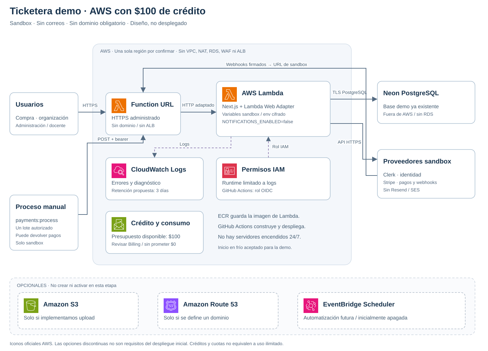

TICKETERA / ARQUITECTURA DEMO
Ticketera demo · AWS con $100 de crédito
Sandbox · Sin correos · 14 octubre 2026 ·
Diseño, no desplegado
Funcionamiento
CI/CD · GitHub Actions
−
100%
+
Restablecer
Abrir SVG
